ATTENTION:This page is best viewed on a bigger screen. The images will appear small on a smart phone.
Every public company has to release their financial description, in order to inform investors how the comapany operates.
Financial operations are stated on what's known as a 10k (Yearly) or 10q (Quarterly). Investors should analyze a comapny's
operations not by just looking at the numbers, but understanding the story behind them.
You may do research on any public company, which is filed under the Security Exchange Commision (www.sec.gov), by utilizing
the EDGAR database to search for the compnay's financial statments. We have chosen Home Depot as a company and included the
fundamental analysis.
Common Stock: Security that represents ownership in a corporation.
Treasury Stock: Portion of shares that a company may keep in its own treasury. It may have come from a repurchase
or buyback from shareholders, or it may have never been issued to the public in the first place.
Outstanding Shares: A company's stock currently held by all its shareholders. The number of outstanding shares is
used in calculating key metrics such as a company's market capitalization, as well as its earnings per share (EPS) and cash flow per
share (CFPS).
Bond: A fixed income investment in which an investor loans money to an entity (typically corporate or governmental) which borrows the funds
for a defined period of time at a variable or fixed interest rate.
Government Bonds: Issued by a national government, generally with a promise to pay periodic interest payments and to repay the face value on
the maturity date.
Corporate Bonds: Issued by a corporation in order to raise financing for a variety of reasons such as to ongoing operations, M&A, or to expand business.
Asset-Backed Securities: A security whose income payments and hence value are derived from and collateralized (or "backed") by a specified pool of
underlying assets.
| Understanding the Basics |
|---|
| 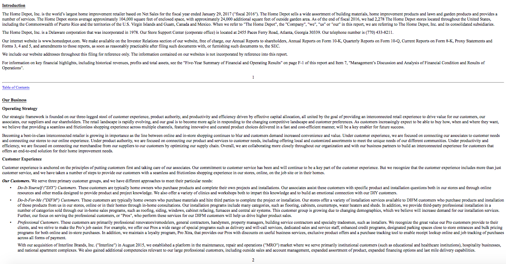 |
| Recognizing Growth |
|---|
| 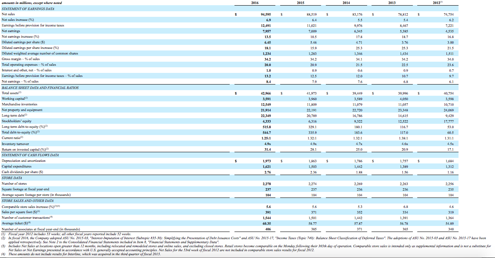 |
|
This portion of the 10k, "Exhibits and Financial Statement Schedules," show how
the compnay performed over the course of 5 years in the "Five Year Summary of Financial
and Operating Results."
|
| Analyzing Trends |
|---|
| Debt, Stockholder's Equity, and T-Stocks |
| 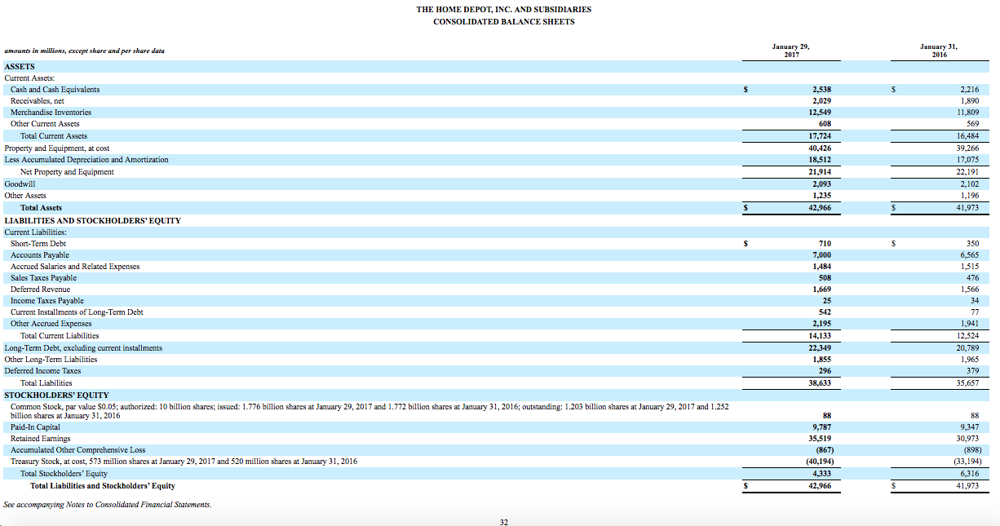 |
|
Let's take a look at the trend in certain areas. Home Depot's debt has increased by $8.9Bil, or 60%. Treasury stock increased by $21Bil, or 109%. Total assets has not changed much, reflecting the fact that they have not opened many stores. There is an increase in inventory, to support increase in sales. Dramatic decrease in stockholders’ equity, since cumulative dividends and share purchases ($29.8Bil) have exceeded cumulative earnings ($21.3Bil). |
| Income Statement |
| 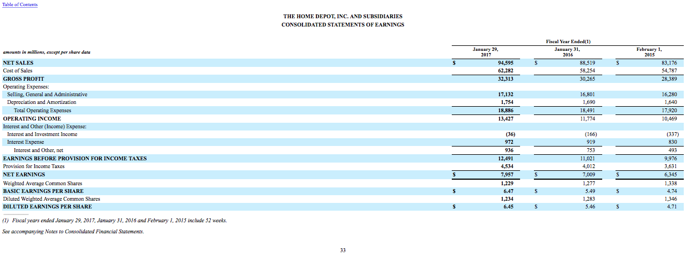 |
|
Over 3 Years:
|
| Cash Flows |
| 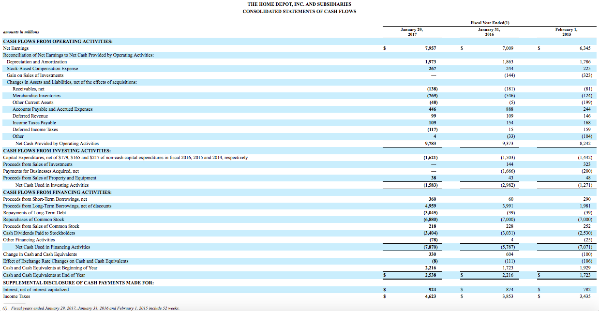 |
|
Calculations (in millions): |
| Internal Controls |
|
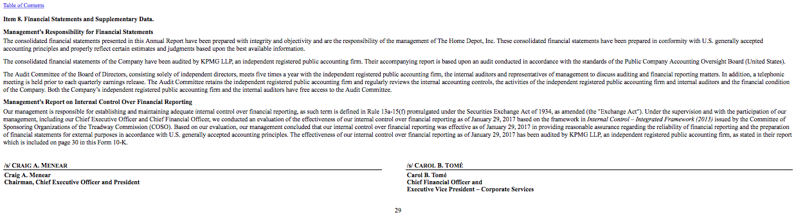
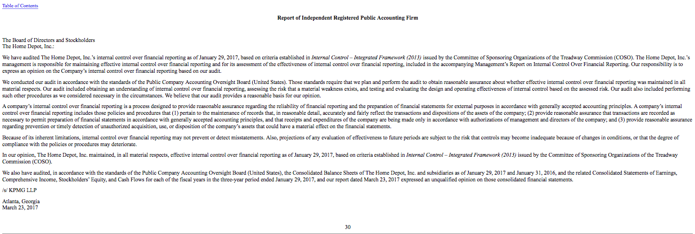 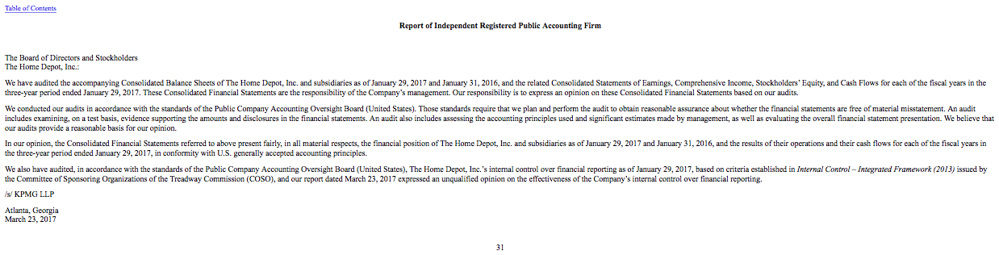 |
|
A company's internal control over financial reporting is a process
designed to provide reasonable assurance regarding the reliability of
financial reporting and the preparation of financial statements for
external purposes in accordance with generally accepted accounting principles.
|
| (MD&A) Management's Discussion and Analysis of Financial Condition and Operations |
|
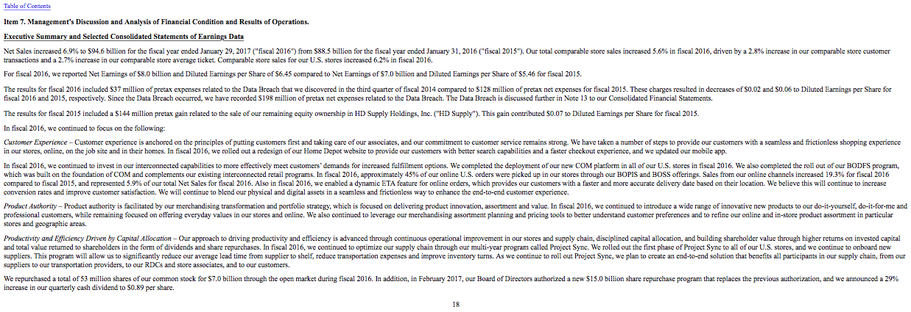
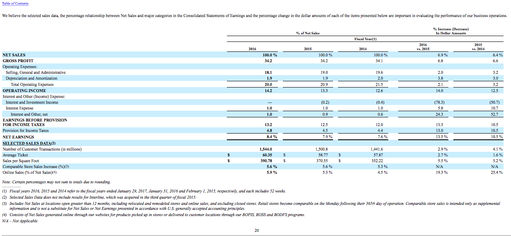 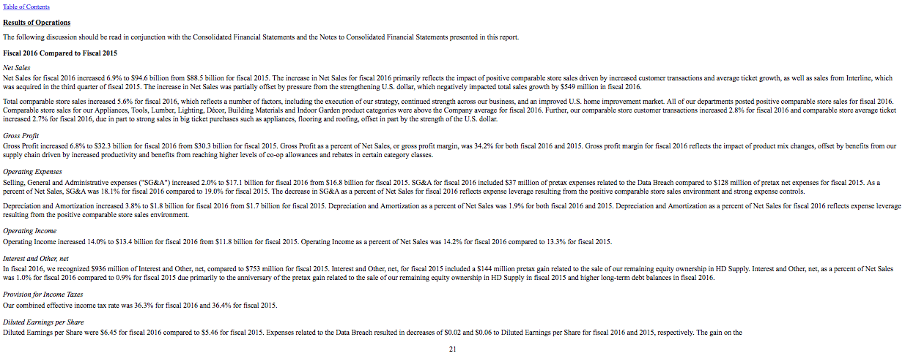 |
|
There was a 6.2% increase in comparable store sales during fiscal
year 2016. According to Investopedia, comparable store sales refers
to the amount of revenue a retail location generated in the most recent
accounting period relative to the amount of revenue it generated at the
same time the past.So for example you would compare the first week of 2017
with the first week of 2016 or a specific date of this year and the same one last year.
|